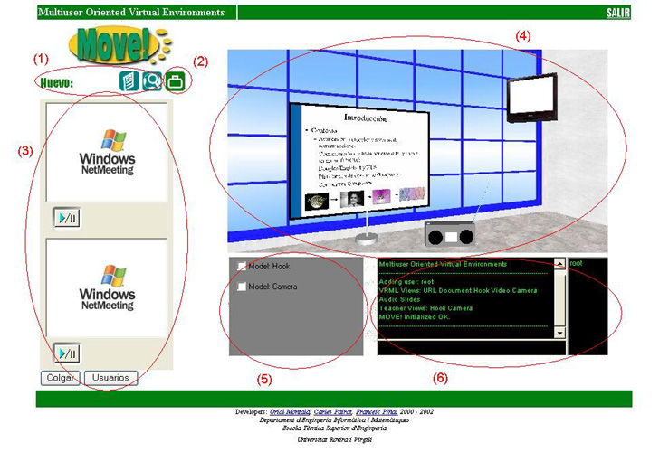
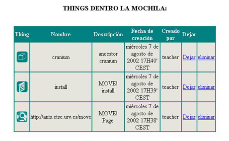

2.5 Entorno 3D del Place
Es aqui donde podremos decir que realmente ya nos encontramos dentro de MOVE!.
La pantalla que tendr� un usuario de MOVE! delante suyo ser� la siguiente:

Podemos ver que est� compuesta de diferentes secciones:
- Barra de Tools: Est� compuesta de las Tools que permiten solo la creaci�n de Things de su tipo dentro del entorno 3D, y que adem�s han sido activadas dentro de este Place:
- File
- URL
- Object
Podremos crear Things de dichos tipos clicando sobre su icono de la Tool a la cual representan.
- Mochila de usuario: Clicando sobre este icono podremos ver todas las Things de tipo URL, File i Object que tenemos en la mochila, i que son copia de otras ya existentes en alguno de los Places

Clicando sobre sacaremos la thing copia de la mochila y la dejaremos dentro el Place, en la posici�n actual donde nos encontramos. Clicando sobre
 eliminaremos la copia de la mochila.
eliminaremos la copia de la mochila. - Tool Netmeeting: Solo aparecer� si ha sido activada para ser utilizada dentro de este Place
- Entorno 3D del Place: Podrem movernos por �l e interactuar con todos los modelos que haya cargados de las Tools y sobre los cuales tengamos permiso de utilizaci�n.
- Modelos sin representaci�n 3D en el Place: Activando la casilla correspondiente accederemos a la ventana de control del modelo.
- Ventana de chat: Nos permitir� comunicarnos con todos los usuarios que estan dentro del Place. Tambi�n podremos enviar mensajes privados a cualquier de ellos introduciendo el siguiente comando:
/priv login_usuario mensaje
Per �ltim, si cliquem sobre el logo  tornarem a la zona THINGS del Place. I si cliquem sobre
sortirem de l'entorn 3D i tornarem a la pantalla d'autentificaci�.
tornarem a la zona THINGS del Place. I si cliquem sobre
sortirem de l'entorn 3D i tornarem a la pantalla d'autentificaci�.